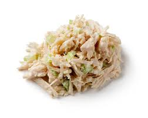

Tuna Salad
Home

Description
This Classic Tuna Salad is creamy, fresh, and packed with texture thanks to crunchy walnuts, bright lemon, and
simple ingredients. It's perfect for sandwiches, wraps, salads, or easy lunches.
Ingredients
- 2 12 oz cans chunk light tuna in water
- 1 cup diced celery
- 1/4 cup walnuts
- 2 green onions
- 1/2 cup mayonnaise
- 1 tbsp lemon juice
- 1/4 tsp black pepper
- 1/4 tsp salt
Steps
- Drain the canned tuna.
- Dice the celery, chop the walnuts, and slice the green onions.
- Add all ingredients to a large bowl and stir until well-combined.
This is pretty good, but I think it is missing something. I just can't quite put my finger on it.
Kinda mid honestly.